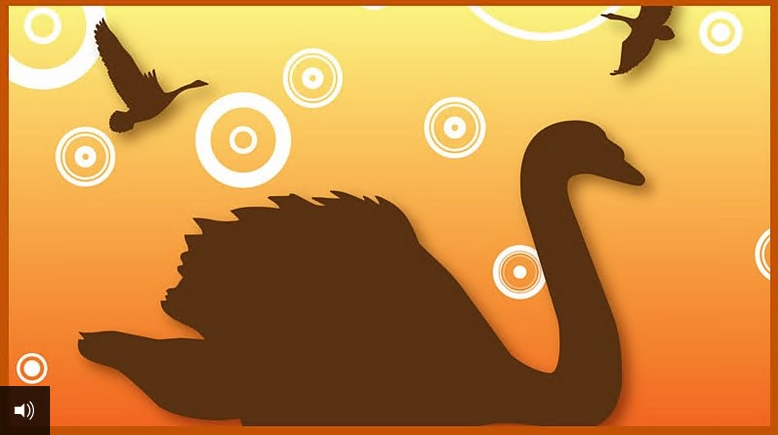

Jeff Wei分享站点
Jeff Wei分享站点丑小鸭 The Ugly Duckling
Don't judge somebody sheerly by its appearance!

作者：丹麦童话作家安徒生
翻译：小魏娜妈
声明
本文出于协助孩子学习童话丑小鸭，整理翻译成中文，仅供孩子们学习讨论用，不得用于其它商业用途，转载请注明出处，微信公众号：小魏娜妈团队。

Plotline 主要情节
不要以貌取人；永不放弃；
- Beginning
- Characters: the ugly duckling
- Background: a duckyard
- Problem: the duckling is ugly and no one likes him.
- Rising actions
- He is so ugly and everybody laugh at him.
- He was made fun of everybody - run off.
- The hen and the cat didn't understand - walked away.
- The woman want hit him - run away.
- Climax
- The ugly duckling turned into swan.
- End
- The duckling learned never to give up.
- I learned not to judge people by their appearance.
Plot
When the story begins, a mother duck's eggs hatch. One of the little birds is perceived by the other birds and animals on the farm as an ugly little creature and suffers much verbal and physical abuse from them. He wanders sadly from the barnyard and lives with wild ducks and geese until hunters slaughter the flocks. He finds a home with an old woman, but her cat and hen tease and taunt him mercilessly and once again he sets off alone.
The duckling sees a flock of migrating wild swans. He is delighted and excited, but he cannot join them, for he is too young and cannot fly. Winter arrives. A farmer finds and carries the freezing little duckling home, but the foundling is frightened by the farmer’s noisy children and flees the house. He spends a miserable winter alone in the outdoors, mostly hiding in a cave on the lake that partly freezes over. When spring arrives, a flock of swans descends on the lake.
The ugly duckling, now having fully grown and matured, is unable to endure a life of solitude and hardship any more and decides to throw himself at the flock of swans deciding that it is better to be killed by such beautiful birds than to live a life of ugliness and misery. He is shocked when the swans welcome and accept him, only to realize by looking at his reflection in the water that he was in fact not a duckling, but a swan all this time. The flock takes to the air, and the now beautiful swan spreads his gorgeous large wings and takes flight with the rest of his new kind family.
正文 as is

In a sunny spot in the country stood an old mansion surrounded by a deep moat. Great dock (burdock牛蒡) leaves grew from the walls of the house right down to the water’s edge; some of them were so tall that a small child could stand upright under them. In amongst the leaves it was as secluded as in the depths of a forest; and there a duck was sitting on here nest. Her little ducklings were just about to be hatched, but she was nearly tired of sitting; it had lasted such a long time. Moreover, she had very few visitors, as the other ducks liked swimming about in the moat better than waddling up to sit under the dock leaves and gossip with her.
乡间是非常美丽的，太阳光正照着一幢老式的宅第，它周围流着一条很深的壕沟（或小溪）。从墙角那儿一直到水里，全盖满了牛蒡的大叶子。最大的叶子长得非常高，小孩子甚至可以直着腰站在下面。像在最浓密的森林里一样，这儿也是很荒凉的。这儿有一只母鸭坐在窠里，她得把她的几只小鸭仔都孵出来了。不过这时她已经几乎要累坏了。很少有客人来看她，因为别的鸭子都愿意在溪流里游来游去，而不愿意跑到牛蒡下面来和她聊天。
At last one egg after another began to crack. “Cheep, cheep!” they said. All the chicks had come to life, and were poking out their heads.
最后，那些鸭蛋一个接着一个地崩开了。“噼!噼!”蛋壳响起来。所有的蛋(雏鸡)现在都变成了小动物。他们把小头都伸出来。
“Quack! quack!” said the duck; they all quacked their hardest, and looked about them on all sides among the green leaves; their mother allowed then to look as much as they liked, for green is good for the eyes.
“嘎!嘎!”母鸭说。他们也就跟着嘎嘎地大声叫起来。他们在绿叶子下面向四周看。妈妈让他们尽量地东张西望，因为绿色对他们的眼睛是有好处的。
“How big the world is, to be sure!” said all the young ones; for they certainly had ever so much more room to move about than when they were inside in the egg shell.
“这个世界真够大!”这些年轻的小家伙说。的确，比起他们在蛋壳里的时候，他们现在的天地真是大不相同了。
“Do you imagine this is the whole world?” said the mother. “It stretches a long way the other side of the garden, right into the parson’s field; but I have never been as far as that! I suppose you are all here now?” and she got up. “ No! I declare I have not got you all yet! The biggest egg is still there; how long is it going to last?” and she settled herself on the nest again.
“你们以为这就是整个世界!”妈妈说。“这地方伸展到花园的另一边，一直伸展到牧师的田里去，才远呢!连我自己都没有去过!我想你们都在这儿吧?”她站起来。“没有，我宣布还没有把你们都生出来呢!这只顶大的蛋还躺着没有动静。它还得躺多久呢?我真是有些烦了。”于是她又坐下来。
“Well, how are you getting on?” said an old duck who had come to pay her a visit.
“唔，情形怎样?”一只来拜访她的老鸭子问。
“This one egg is taking such a long time, “answered the sitting duck,” the shell will not crack; but now you must look at the others; they are the finest ducklings I have ever seen! They are all exactly like their father, the rascal! he never comes to see me.”
“这个蛋费的时间真久!”坐着的母鸭说。“它老是不裂开。请你看看别的吧。他们真是一些最逗人爱的小鸭儿!都像他们的爸爸——这个坏东西从来没有来看过我一次!”
“Let me look at the egg that won’t crack,” said the old duck. “You may be sure that it is a turkey’s egg! I have been cheated like that once, and I had no end of trouble and worry with the creatures, for I may tell you that you that they are afraid of the water. I could not get them into it; I quacked and snapped at them, but it was no good. Let me see the egg! Yes, it is a turkey’s egg! You just let it alone and teach the other children to swim.”
“让我瞧瞧这个老是不裂开的蛋吧，”这位年老的客人说，“请相信我，这是一只吐绶鸡的蛋。有一次我也同样受过骗，你知道，那些小家伙(动物)不知道给了我多少麻烦和苦恼，因为他们都不敢下水。我简直没有办法叫他们在水里试一试。我好说歹说，一点用也没有!——让我来瞧瞧这只蛋吧。哎呀!这是一只吐绶鸡的蛋!让他躺着吧，你尽管叫别的孩子去游泳好了。”
“I will sit on it a little longer；I have sat so long already, that I may as well go on till the Midsummer Fair comes round.”
“我还是在它上面多坐一会儿吧，”鸭妈妈说，“我已经坐了这么久，就是再坐它一个星期也没有关系。”
“Please yourself,” said the old duck, and she went away.
“那么就请便吧，”老鸭子说。于是她就告辞了。
At last the big egg cracked. “Cheep, cheep!” said the young one and tumbled out; how big and ugly he was! The duck looked at him.
最后这只大蛋裂开了。“噼!噼!”新生的这个小家伙叫着向外面爬。他是又大又丑。鸭妈妈把他瞧了一眼。
“That is a monstrous big duckling,” she said; “none of the others looked like that; can he be a turkey chick? Well, we shall soon find that out; into the water he shall go, if I have to kick him in myself.”
“这个小鸭子大得怕人，”她说，“别的没有一个像他;但是他一点也不像小吐绶鸡!好吧，我们马上就来试试看吧。他得到水里去，我踢也要把他踢下水去。”
Next day was gloriously fine, and the sun shone on all the green dock leaves. The mother duck with her whole family went down to the moat.
第二天的天气是又晴和、又美丽。太阳照在绿牛蒡上。鸭妈妈带着她所有的孩子走到溪边来。
Splash, into the water she sprang. “Quack, quack!” she said, and one duckling plumped in after the other. The water dashed over their heads, but they came up again and floated beautifully; their legs went of themselves, and they were all there; even the big ugly gray one swam about with them.
噗通!她跳进水里去了。“呱!呱!”她叫着，于是小鸭子就一个接着一个跳下去。水淹到他们头上，但是他们马上又冒出来了，游得非常漂亮。他们的小腿很灵活地划着。他们全都在水里，连那个丑陋的灰色小家伙也跟他们在一起游。
“No , that is no turkey,” she said. “How beautifully he uses his legs and how erect he holds himself: he is my own chick! After all, he is not so bad when you come to look at him properly. Quack, quack! Now come with me and I will take you into the world, and introduce you to the duckyard; but keep close to me all the time, so that no one may tread upon you, and beware of the cat!”
“唔，他不是一个吐绶鸡，”她说，“你看他的腿划得多灵活，他浮得多么稳!他是我亲生的孩子!如果你把他仔细看一看，他还算长得蛮漂亮呢。嘎!嘎!跟我一块儿来吧，我把你们带到广大的世界上去，把那个养鸡场介绍给你们看看。不过，你们得紧贴着我，免得别人踩着你们。你们还得当心猫儿呢!”
They went into the duckyard. There was a fearful uproar going on, for two broods were fighting for the head of an eel, and in the end the cat captured it.
这样，他们就到养鸡场里来了。场里响起了一阵可怕的喧闹声，因为有两个家族正在争夺一个鳝鱼头，而结果猫儿却把它抢走了。
“That’s how things go in this world,” said the mother duck, and she licked her bill, for she wanted the eel’s head herself.
“你们瞧，世界就是这个样子!”鸭妈妈说。她的嘴流了一点涎水(她舔了舔她的嘴)，因为她也想吃那个鳝鱼头。
“Use your legs,” said she; “mind you quack properly, and bend your necks to the old duck over there! She is the grandest of them all; she has Spanish blood in her veins, and that accounts for her size, and, do you see? She has a red rag round her leg; that is a wonderfully fine thing, and the most extraordinary mark of distinction any duck can have. It shows clearly that she is not to be parted with, and that she is worthy of recognition both by beasts and men! Quack now! don’t turn your toes in; a well brought up duckling keeps his legs wide apart just like father and mother; that’s it, now bend your necks, and say quack!”
“现在使用你们的腿吧!”她说。“你们拿出精神来。你们如果看到那儿的一个老母鸭，你们就得把头低下来，因为她是这儿最有声望的人物。她有西班牙的血统——因为她长得非常胖。你们看，她的腿上有一块红布条。这是一件非常出色的东西，也是一个鸭子可能得到的最大光荣：它的意义很大，说明人们不愿意失去她，动物和人统统都得认识她。打起精神来吧——不要把脚趾头缩进去。一个有很好教养的鸭子总是把腿摆开的，像爸爸和妈妈一样。好吧，低下头来，说：‘嘎’呀!”
They did as they were bid, but the other ducks round about looked at them and said, quite loudly: “Just look there! Now we are to have that tribe! Just as if there were not enough of us already, and, oh, dear! How ugly that duckling is; we won’t stand him!”
他们这样做了。别的鸭子站在旁边看着，同时用相当大的声音说：“瞧!现在又来了一批找东西吃的客人，好像我们的人数还不够多似的!呸!瞧那只小鸭的一副丑相!我们真看不惯!”
And a duck flew at him at once and bit him in the neck.
于是马上有一只鸭子飞过去，在他的脖颈上啄了一下。
“Let him be, “said the mother, “he is doing no harm.”
“请你们不要管他吧，”妈妈说，“他并不伤害谁呀!”
“Very likely not, but he is so ungainly and queer,” said the bitter; “he must be whacked.”
“对，不过他长得太大、太特别了，”被啄过的那只鸭子说，“因此他必须挨打!”
“They are handsome children mother has,” said the old duck with the rag round her leg; “all good looking except this one. He is not a good specimen; it’s a pity you can’t make him over again.”
“那个母鸭的孩子都很漂亮，”腿上有一条红布的那个母鸭说，“他们都很漂亮，只有一只是例外，他不是一个好物种。这真是可惜，你不能把他再孵一次。”
“That can’t be done, your grace,” said the mother duck; “ he is not handsome, but he is a thorough good creature, and he swims as beautifully as any of the others; nay, I think I might venture even to add that I think he will improve as he goes on or perhaps in time he may grow smaller! He was too long in the egg, and so he has not come out with a very good figure .” She patted his neck and stroked him down.” Besides he is a drake,” said she; “so it does not matter so much. I believe he will be very strong, and I don’t doubt but he will make his way in the world.”
“那可不能，太太，”鸭妈妈回答说，“他不好看，但是他的脾气非常好。他游起水来也不比别人差——我还可以说，游得比别人好呢。我想他会慢慢长得漂亮的，或者到适当的时候，他也可能缩小一点。他在蛋里躺得太久了，因此他的模样有点不太自然。”她说着，同时在他的脖颈上啄了一下，把他的羽毛理了一理。“此外，他还是一只公鸭呢，”她说，“所以关系也不太大。我想他的身体很结实，将来总会自己找到出路的。”
“The other ducklings are very pretty,” said the old duck.” Now make yourselves quite at home, and if you find the head of an eel you may bring it to me!”
“别的小鸭倒很可爱，”老母鸭说，“你在这儿不要客气。如果你找到鳝鱼头，请把它送给我好了。”
After that they felt quite at home. But the poor duckling which had been the last to come out of the shell, and who was so ugly, was bitten, pushed about, and made fun of both by the ducks and the hens. “He is too big ,” they all said; and the turkey cock, who was born with his spurs on, and therefore thought himself quite an emperor, puffed himself up like a vessel in full sail, made for him, and gobbled and gobbled till he became quite red in the face. The poor duckling was at his wit’s end, and did not know which way to turn; he was in despair because he was so ugly, and the butt of the whole duckyard.
他们现在在这儿，就像在自己家里一样。不过从蛋壳里爬出的那只小鸭太丑了，到处挨打、被排挤、被讥笑，不仅在鸭群中是这样，连在鸡群中也是这样。“他真是又粗又大!”大家都说。有一只雄吐绶鸡生下来脚上就有马刺，因此他自以为是一个皇帝。他把自己吹得像一条鼓满了风的帆船，来势汹汹地向他走来，瞪着一双大眼睛，脸上涨得通红。这只可怜的小鸭不知道站在什么地方，或者走到什么地方去好。他觉得非常悲哀，因为自己长得那么丑陋，而且成了全体鸡鸭的一个嘲笑对象。
So the first day passed, and afterwards matters grew worse and worse. The poor duckling was chased and hustled by all of them; even his brothers and sisters abused him; and they were always saying,“ If only the cat would get hold of you, you hideous object!” Even his mother said,“ I wish to goodness you were miles away.” The ducks bit him, the hens pecked him, and the girl who fed them kicked him aside.
这是头一天的情形。后来一天比一天糟。大家都要赶走这只可怜的小鸭;连他自己的兄弟姊妹也对他生气起来。他们老是说：“你这个丑妖怪，希望猫儿把你抓去才好!”于是妈妈也说起来：“祈求老天爷我希望你走远些!”鸭儿们啄他。小鸡打他，喂鸡鸭的那个女佣人用脚来踢他。
At last he ran off and flew right over the hedge, where the little birds flew up into the air in a fright.
于是他飞过篱笆逃走了;灌木林里的小鸟一见到他，就惊慌地向空中飞去。
“That is because I am so ugly,” thought the poor duckling, shutting his eyes, but he ran on all the same until he came to a great marsh where the wild ducks lived ; he was so tired and miserable that he stayed there the whole night.
“这是因为我太丑了!”小鸭想。于是他闭起眼睛，继续往前跑。他一口气跑到一块住着野鸭的沼泽地里。他在这儿躺了一整夜，因为他太累了，太沮丧了。
In the morning the wild ducks flew up to inspect their new comrade.
天亮的时候，野鸭都飞起来了。他们瞧了瞧这位新来的朋友。
“What sort of a creature are you?” they inquired, as the duckling turned from side to side and greeted them as well as he could. “You are frightfully ugly,” said the wild ducks, “but that does not matter to us, so long as you do not marry into our family!” Poor fellow! He had not thought of marriage; all he wanted was permission to lie among the rushes, and to drink a little of the marsh water.
“你是谁呀?”他们问。小鸭一下转向这边，一下转向那边，尽量对大家恭恭敬敬地行礼。“你真是丑得厉害，”野鸭们说，“不过只要你不跟我们族里任何鸭子结婚，对我们倒也没有什么大的关系。”可怜的小东西!他根本没有想过什么结婚;他只希望人家准许他躺在芦苇里，喝点沼泽的水就够了。
He stayed there two whole days, then two wild geese came, or rather two wild ganders; they were not long out of the shell, and therefore rather pert.
他在那儿躺了两个整天。后来有两只野鹅——严格地讲，应该说是两只公鹅飞来了。他们从娘的蛋壳里爬出来还没有多久，因此非常顽皮。
“I say, comrade,” they said, “you are so ugly that we have taken quite a fancy to you; will you join us and be a bird of passage? There is another marsh close by, and there are some charming wild geese there; all sweet young ladies, who can say quack! You are ugly enough to make your fortune among them.” Just at that moment, bang! Bang! Was heard up above, and both the wild geese fell dead among the reeds, and the water turned blood red. Bang! bang! went the guns, and whole flocks of wild geese flew up from the rushes and the shot peppered among them again.
“我说，朋友，”他们说，“你丑得可爱，连我都禁不住要喜欢你了。愿意做一只候鸟，跟我们一块儿飞走?另外有一块沼泽地离这儿很近，那里有好几只活泼可爱的鹅儿。她们都是小姐，都会说：‘嘎!’你是那么丑，可以在她们那儿碰碰你的运气!”“噼!啪!”天空中发出一阵响声。这两只公鹅落到芦苇里，死了，把水染得鲜红。“噼!啪!”又是一阵响声。整群的鹅儿都从芦苇里飞起来，于是又是一阵枪声响起来了。
There was a grand shooting party, and the sportsmen lay hidden round the marsh; some even sat on the branches of the trees which overhung the water; the blue smoke rose like clouds among the dark trees and swept over the pool.
原来有人在大规模地打猎。猎人都埋伏在这沼泽地的周围，有几个人甚至坐在伸垂悬在芦苇上空的树枝上。蓝色的烟雾在黑暗的树林中升起，像云彩一样掠过这片池塘。
The water-dogs wandered about in the swamp, splash! Splash! The rushes and reeds bent beneath their tread on all sides. It was terribly alarming to the poor duckling. He twisted his head round to get it under his wing, and just at that moment a frightful, big dog appeared close beside him; his tongue hung right out of his mouth and his eyes glared wickedly. He opened his great chasm of a mouth close to the duckling, showed his sharp teeth-and -splash-went on without touching him.
这时，猎狗都扑通扑通地从泥泞里跑过来，灯芯草和芦苇向两边倒去。这对于可怜的小鸭说来真是可怕的事情!他把头掉过来，藏在翅膀里。不过，正在这时候，一只骇人的大猎狗紧紧地站在小鸭的身边。它的舌头从嘴里伸出很长，眼睛发出丑恶和可怕的光。它张开大嘴巴靠近了丑小鸭，露出了尖牙齿，可是——噗通!噗通!——它跑开了，没有把他抓走。
“Oh, thank heaven!” sighed the duckling, “I am so ugly that, even the dog won’t bite me!”
“啊，谢谢老天爷!”小鸭叹了一口气，“我丑得连猎狗也不要咬我了!”
Then he lay quite still while the shot whistled among the bushes, and bang after bang rent the air. It only became quite late in the day, but even then the poor duckling did not dare to get up; he waited several hours more before he looked about, and then he hurried away from the marsh as fast as he could. He ran across fields and meadows, and there was such a wind that he had hard work to make his way.
他安静地躺下来。枪声还在芦苇里响着，枪弹一发接着一发地射出来。天快要暗的时候，四周才静下来。可是这只可怜的小鸭还不敢站起来。他等了好几个钟头，才敢向四周望一眼，于是他急忙跑出这块沼泽地，拼命地跑，向田野上跑，向牧场上跑。这时吹起一阵狂风，他跑起来非常困难。
Towards night he reached a poor little cottage; it was such a miserable hovel that it could not make up its mind which way to fall even, and so it remained standing. The wind whistled so fiercely round the duckling that he had to sit on his tail to resist it, and it blew harder and harder; then he saw that the door had fallen off one hinge and hung so crookedly that he could creep into the house through the crack, and by this means he made his way into the room. An old woman lived there with her cat and her hen. The cat, which she called “Sonnie,” could arch his back, purr and give off electric sparks, that is to say if you stroked his fur the wrong way. The hen had quite tiny short legs, and so she was called “ Chuckie-low-legs.” She laid good eggs. and the old woman was as fond of her as if she had been her own child.
到天黑的时候，他来到一个简陋的农家小屋。它是那么残破，甚至不知道应该向哪一边倒才好——因此它也就没有倒。狂风在小鸭身边号叫得非常厉害，他只好面对着它坐下来。它越吹越凶。于是他看到那门上的铰链有一个已经松了，门也歪了，他可以从空隙钻进屋子里去，他便钻进去了。屋子里有一个老太婆和她的猫儿，还有一只母鸡住在一起。她把这只猫儿叫“小儿子”。这只猫能把背拱得很高，发出咪咪的叫声来;他的身上还能迸出火花，不过要他这样做，你就得倒摸他的毛。母鸡的腿又短又小，因此她叫“短腿鸡儿”。她生下的蛋很好，所以老太婆把她爱得像自己的亲生孩子一样。
In the morning the strange duckling was immediately discovered and the cat began to purr, and the hen to cluck.
第二天早晨，人们马上注意到了这只来历不明的小鸭。那只猫儿开始咪咪地叫，那只母鸡也咯咯地喊起来。
“What on earth is that!” said the old woman, looking round, but her sight was not good, and she thought the duckling was a fat duck which had escaped. “This is a capital find,” said she; “now I shall have duck’s eggs if only it is not a drake! We must find out about that!”
“这是怎么一回事儿?”老太婆说，同时朝四周看。不过她的眼睛有点花，所以她以为小鸭是一只肥鸭，走错了路，才跑到这儿来了。“这真是少有的运气!”她说，“现在我可以有鸭蛋了。我只希望他不是一只公鸭才好!我们得弄个清楚!”
So she took the duckling on trial for three weeks, but no eggs made their appearance. The cat was the master of the house and the hen the mistress, and they always spoke of “we and the world,” for they thought that they represented the half of the world, and that quite the better half.
这样，小鸭就在这里受了三个星期的考验，可是他什么蛋也没有生下来。那只猫儿是这家的主人，那只母鸡是这家的太太，所以他们一开口就说：“我们和这世界!”因为他们以为他们就是半个世界，而且还是最好的那一半呢。
The duckling thought there might be two opinions on the subject, but the hen would not hear of it.
小鸭觉得自己可以有不同的看法，但是他的这种态度，母鸡却忍受不了。
“Can you lay eggs?” she asked.
“你能够生蛋吗?”她问。
“No!”
“不能!”
“Will you have the goodness to hold your tongue then!”
“那么就请你不要发表意见。”
And the cat said, “Can you arch your back, purr, or give off sparks?”
于是雄猫说：“你能拱起背，发出咪咪的叫声和迸出火花吗?”
“No.”
“不能!”
“Then you had better keep your opinions to yourself when people of sense are speaking!”
“那么，当有理智的人在讲话的时候，你就没有发表意见的必要!”
The duckling sat in the corner nursing his ill-humor; then he began to think of the fresh air and the sunshine, an uncontrollable longing seized him to float on the water, and at last he could not help telling the hen about it.
小鸭坐在一个墙角里，心情非常不好。这时他想起了新鲜空气和太阳光。他觉得有一种奇怪的渴望：他想到水里去游泳。最后他实在忍不住了，就不得不把心事对母鸡说出来。
“What on earth possesses you?” she asked; “you have nothing to do, that is why you get these freaks into your head. Lay some eggs or take to purring, and you will get over it.”
“你在起什么念头?”母鸡问。“你没有事情可干，所以你才有这些怪想头。你只要生几个蛋，或者咪咪地叫几声，那么你这些怪想头也就会没有了。”
“But it is so delicious to float on the water,” said the duckling; “so delicious to feel it rushing over your head when you dive to the bottom.”
“不过，在水里游泳是多么痛快呀!”小鸭说。“让水淹在你的头上，往水底一钻，那是多么痛快呀!”
“That would be a fine amusement,” said the hen. “I think you have gone mad. Ask the cat about it; he is the wisest creature I know; ask him if he is fond of floating on the water or diving under it. I say nothing about myself. Ask our mistress, the old woman; there is no one in the world cleverer than she is. Do you suppose she has any desire to float on the water, or to duck underneath it?”
“是的，那一定很痛快!”母鸡说，“你简直在发疯。你去问问猫儿吧——在我所认识的一切朋友当中，他是最聪明的——你去问问他喜欢不喜欢在水里游泳，或者钻进水里去。我先不讲我自己。你去问问你的主人——那个老太婆——吧，世界上再也没有比她更聪明的人了!你以为她想去游泳，让水淹在她的头顶上吗?”
“You do not understand me,” said the duckling.
“你们不了解我，”小鸭说。
“Well, if we don’t understand you, who should? I suppose you don’t consider yourself cleverer than the cat or the old woman, not to mention me. Don’t make a fool of yourself, child, and thank your stars for all the good we have done you! Have you not lived in this warm room, and in such society that you might have learned something? But you are an idiot, and there is no pleasure in associating with you. You may believe me I mean you well, I tell you home truths, and there is no surer way than that of knowing who are one’s friends, You just see about, laying some eggs, or learn to purr, or to emit sparks.”
“我们不了解你?那么请问谁了解你呢?我猜你决不会比猫儿和女主人更聪明吧——我先不提我自己。孩子，你不要自以为了不起吧!你现在得到这些照顾，你应该感谢上帝。你现在到一个温暖的屋子里来，有了一些朋友，而且还可以向他们学习很多的东西，不是吗?不过你是一个傻瓜，跟你在一起真不痛快。你可以相信我，我对你说这些不好听的话，完全是为了帮助你呀。只有这样，你才知道谁是你的真正朋友!请你注意学会生蛋，或者咪咪地叫，或者迸出火花吧!”
“I think I will go out into the wide world,” said the duckling.
“我想我还是走到广大的世界上去好，”小鸭说。
“Oh, do so by all means,” said the hen.
“好吧，你去吧!”母鸡说。
So away went the duckling; he floated on the water and ducked underneath it, but he was looked askance at by every living creature for his ugliness. Now the autumn came on; the wind took hold of then, and they danced about. The sky looked very cold, and the clouds hung heavy with snow and hail. A raven stood on the fence and croaked caw! Caw! From sheer cold; it made one shiver only to think of it; the poor duckling certainly was in a bad case.
于是小鸭就走了。他一会儿在水上游，一会儿钻进水里去;不过，因为他的样子丑，所有的动物都瞧不起他。秋天到来了。树林里的叶子变成了黄色和棕色。风卷起它们，把它们带到空中飞舞，而空中是很冷的。云块沉重地载着冰雹和雪花，低低地悬着。乌鸦站在篱笆上，冻得低沉沙哑地叫：“呱!呱!”是的，你只要想想这情景，就会觉得冷了。这只可怜的小鸭的确没有一个舒服的时候。
One evening, the sun was just setting in wintry splendor, when a flock of beautiful large birds appeared out of the bushes; the duckling, had never seen anything so beautiful. They were dazzlingly white with long waving necks; they were swans, and uttering a peculiar cry. They spread out their magnificent broad wings and flew away from the cold regions to warmer lands and open seas. They mounted so high, so very high! The ugly little duckling became strangely uneasy; he circled round and round in the water like a wheel, craning his neck up into the air after them. Then he uttered a shriek so piercing and so strange, that he quite frightened himself. Oh, he could not forget those beautiful birds, those happy birds, and as soon as they were out of sight he ducked right down to the bottom, and when he came up again he was quite beside himself. He did not know what the birds were, or whither they flew, but all the same he was more drawn towards them than he had ever been by any creatures before. He did not envy them in the least; how could it occur to him even to wish to be such a marvel of beauty? He would have been thankful if only the ducks would have tolerated him among them-the poor ugly creature!
一天晚上，当太阳正在寒光中美丽地落下去的时候，有一群漂亮的大鸟从灌木林里飞出来，小鸭从来没有看到过如此美丽的东西。他们白得发亮，颈项又长又柔软。这就是天鹅。他们发出一种奇异的叫声，展开美丽的宽翅膀，从寒冷的地带飞向温暖的国度，飞向开阔的海域。他们飞得很高——那么高，丑小鸭不禁感到一种说不出的兴奋。他在水上像一个车轮似地不停地旋转着，同时，把自己的颈项高高地向他们伸着，发出一种响亮的怪叫声，连他自己也害怕起来。啊!他再也忘记不了这些美丽的鸟儿，这些幸福的鸟儿。当他看不见他们的时候，就沉入水底;但是当他再冒到水面上来的时候，却感到非常空虚。他不知道这些鸟儿的名字，也不知道他们要向什么地方飞去。不过他被他们迷住了，好像他从来还没有爱过什么东西似的。他并不嫉妒他们。他怎能梦想有他们那样美丽呢?只要别的鸭儿准许他跟他们生活在一起，他就已经很满意了——可怜的丑东西。
The winter was so bitterly cold that the duckling was obliged to swim about in the water to keep it from freezing, but every night the hole in which he swam got smaller and smaller. Then it froze so hard that the surface ice cracked, and the duckling had to use his legs all the time, so that the ice should not close in round him; at last he was so weary that he could move no more, and he was frozen fast into the ice.
冬天变得很冷，非常的冷!小鸭不得不在水上游来游去，免得水面完全冻结成冰。不过他游动的这个小范围，一晚比一晚缩小。水冻得厉害，人们可以听到冰块的碎裂声。小鸭只好用他的一双腿不停地游动，免得他完全被冰封闭。最后，他终于昏倒了，躺着动也不动，跟冰块结在一起。
Early in the morning a peasant came along and saw him; he went out onto the ice and hammered a hole in it with his heavy wooden shoe, and carried the duckling home to his wife. There it soon revived. The children wanted to play with it, but the duckling thought they were going to abuse him, and rushed in his fright into the milk pan, and the milk spurted out all over the room. The woman shrieked and threw up her hands. The duckling flew into the butter cask, and down into the milk tub and out again. Just imagine what it looked like by this time! The woman screamed and tried to hit it with the tongs, and the children tumbled over one another in trying to catch it, and they screamed with laughter-by good luck the door stood open, and the duckling flew out among the bushes and the new fallen snow –and it lay there thoroughly exhausted.
大清早，有一个农民在这儿经过。他看到了这只小鸭，就走过去用木屐把冰块踏破，然后把他抱回来，送给他的妻子。他这时才渐渐地恢复了知觉。小孩子们都想要跟他玩，不过小鸭以为他们想要伤害他。他一害怕就跳到牛奶盘里去了，把牛奶溅得满屋子都是。女人惊叫起来，拍着双手。这么一来，小鸭就飞到黄油盆里去了，然后就飞进面粉桶里去了，最后才爬出来。想象一下这时他的样子才好看呢!女人尖声地叫起来，拿着火钳要打他。小孩们挤做一团，想抓住这小鸭。他们又是笑，又是叫!——幸好大门是开着的。他钻进灌木林中新下的雪里面去。他躺在那里，筋疲力尽。
But it would be too sad to mention all the privation and misery it had to go through during that hard winter. When the sun began to shine warmly again, the duckling was in the marsh, lying among the rushes; the larks were singing and the beautiful spring had come.
要是只讲他在这严冬所受到困苦和灾难，那么这个故事也就太悲惨了。当太阳又开始温暖地照着的时候，他正躺在沼泽地的芦苇里。百灵鸟在唱歌，美丽的春天已经来了。
When all at once it raised its wings, they flapped with much greater strength than before, and bore him off vigorously. Before he knew where he was, he found himself in a large garden where the apple trees were in full blossom, and the air was scented with lilacs; the long branches overhung the indented shores of the lake! Oh! the spring freshness was so delicious!
忽然间他举起翅膀：翅膀拍起来比以前有力得多，马上就把他托起来飞走了。他不知不觉地已经飞进了一座大花园。这儿苹果树正开着花;紫丁香在散发着香气，它又长又绿的枝条垂悬到弯弯曲曲的溪流上。啊，这儿美丽极了，充满了春天的气息!
Just in front of him he saw three beautiful white swans advancing towards him from a thicket; with rustling feathers they swam lightly over the water. The duckling recognized the majestic birds; and he was over-come by a strange melancholy.
三只美丽的白天鹅从树荫（灌木丛）里一直游到他面前来。他们轻飘飘地浮在水上，羽毛发出飕飕的响声。小鸭认出这些美丽的动物，于是心里感到一种说不出的难过。
“I will fly to them, the royal birds, and they will hack me to pieces, because I, who am so ugly, venture to approach them! But it won’t matter; better be killed by them than be snapped at by the ducks, pecked by the hens, or spurned by the henwife, or suffer so much misery in the winter.”
“我要飞向他们，飞向这些高贵的鸟儿!可是他们会把我弄死的，因为我是这样丑，居然敢接近他们。不过这没有什么关系!被他们杀死，要比被鸭子咬、被鸡群啄，被看管养鸡场的那个女佣人踢和在冬天受苦好得多!”
So he flew into the water and swam towards the stately swans; they saw him and darted towards him with ruffled feathers.
于是他飞到水里，向这些美丽的天鹅游去：这些动物看到他，马上就竖起羽毛向他游来。
“Kill me, oh, kill me!” said the poor creature, and bowing his head towards the water he awaited his death. But what did he see reflected in the transparent water?
“请你们弄死我吧!”这只可怜的动物说。他把头低低地垂到水上，只等待着死。但是他在这清澈的水上看到了什么倒影呢?
He saw below him his own image, but he was no longer a clumsy dark gray bird, ugly and ungainly; he was himself a swam! It does not matter in the least having been born in a duckyard, if only you come out of a swan’s egg!
他看到了自己的倒影。但那不再是一只粗笨的、深灰色的、又丑又令人讨厌的鸭子，而却是——一只天鹅!只要你曾经在一只天鹅蛋里待过，就算你是生在养鸭场里也没有什么关系。
He felt quite glad of all the misery and tribulation he had gone through; he was the better able to appreciate his good fortune now, and all the beauty which greeted him. The big swans swam round and round him, and stroked him with their bills.
对于他过去所受的不幸和苦恼，他现在感到非常高兴。他现在清楚地认识到幸福和美正在向他招手。——许多大天鹅在他周围游泳，用嘴来亲他。
Some little children came into the garden with corn and pieces of bread, which they threw into the water; and the smallest one cried out, “There is a new one!” The other children shouted with joy, “Yes, a new one has come!” And they clapped their hands and danced about, running after their father and mother. They threw the bread into the water, and one and all said: “The new one is the prettiest! He is so young and handsome.” And the old swans bent their heads and did homage before him.
花园里来了几个小孩子。他们向水上抛来许多面包片和玉米粒。最小的那个孩子喊道：“你们看那只新天鹅!”别的孩子也兴高采烈地叫起来：“是的，又来了一只新的天鹅!”于是他们拍着手，跳起舞来，向他们的爸爸和妈妈跑去。他们抛了更多的面包和糕饼到水里，同时大家都说：“这新来的一只最美!那么年轻，那么好看!”那些老天鹅不禁在他面前低下头来表示敬意。
He felt quite shy, and hid his head under his wing; he did not know what to think; he was so happy, but not at all proud; a good heart never becomes proud. He thought of how he had been pursued and scorned, and now he heard them all say that he was the most beautiful of all beautiful birds. The lilacs bent their boughs right down into the water before him, and the bright sun was warm and cheering, and he rustled his feathers and raised his slender neck aloft, saying with exultation in his heart: “I never dreamed of so much happiness when I was the Ugly Duckling!”
他感到非常难为情。他把头藏到翅膀里面去，不知道怎么办才好。他感到太幸福了，但他一点也不骄傲，因为一颗好的心是永远不会骄傲的。他想其他曾经怎样被人迫害和讥笑过，而他现在却听到大家说他是美丽的鸟中最美丽的一只鸟儿。紫丁香在他面前把枝条垂到水里去。太阳照得很温暖，很愉快。他扇动翅膀，伸直细长的颈项，从内心里发出一个快乐的声音：“当我还是一只丑小鸭的时候，我做梦也没有想到会有这么多的幸福!”
拓展阅读：安徒生童话丑小鸭的道理
- 读完《丑小鸭》这篇文章后，我懂得了“不能以貌取人”，不能嘲笑别人。
- 虽然有些人小时候长的难看，但她的心底善良、有智慧，长大也能变成一只美丽的“白天鹅”。也有些人小时候长的挺漂亮，像公主一样，可是她的内心恶毒，爱嘲笑别人，等到过一段日子，她就会一个朋友也没有，越长越难看，小时候的“白天鹅”也会变成“丑小鸭”。
- 外表的美与丑只是人生很小的一部分。
- 我觉得虽然这篇文章的丑小鸭没有信心，但它还是很坚强的，它知道自己长的很丑，它知道朋友们不喜欢它，但是它没有想：“既然我自己长的那样的丑，既然朋友们都不喜欢我，我活在这个世界上还有什么用啊!”要是我是文章中的丑小鸭，那些小鸭子、小狗、小猫再嘲笑我，我会对它们说“：虽然我长的难看，但是我心底善良，坚强，总会有人喜欢我的。”
- 我们要向文章中的丑小鸭学习，不管别人说什么，你都要坚强，不要轻言放弃，我们也要懂得一个道理“一个人的美丑不在外表，美丽的真谛在于拥有一颗纯洁的心灵。
词汇详解
PS：Part of new glossary as follows:
- mansion宅第；公馆；英[ˈmænʃn]
- surrounded环绕；surround的过去分词和过去式；英[səˈraʊndɪd]
- moat 壕沟；护城河；英[məʊt]
- dock leaves 牛蒡叶
- stand upright 直着腰站着，站直
- amongst在……之中；英[əˈmʌŋst]
- secluded荒凉的；僻静的;隐居的；英[sɪˈkluːdɪd]
- hatched孵出，hatch的过去分词和过去式，英[hætʃt]
- waddling(鸭子似地)蹒跚行走，英[ˈwɒdlɪŋ]
- gossip八卦；闲聊；英[ˈɡɒsɪp]
- crack. 破裂；裂开；英[kræk]
- chicks雏鸟;(尤指)雏鸡，小鸡;少女;英[tʃɪks]
- poking out伸出来
- Quack拟声词，(鸭子的)呱呱声，嘎嘎声；英[kwæk]
- to be sure 确定
- certainly确定地，肯定的；英[ˈsɜːtnli]
- egg shell.蛋壳
- stretch拉长;拽宽;撑大;英[stretʃ]
- parson教区牧师；英[ˈpɑːsn]
- suppose猜想；推断；料想；英[səˈpəʊz]
- declare宣称；表明；声称；英[dɪˈkleə(r)]
- settled不大可能变动的;稳定的;舒适自在的;解决；英[ˈsetld]
- pay sb a visit.拜访某人
- rascal坏蛋，坏东西；英[ˈrɑːskl]
- turkey吐绶鸡;火鸡;火鸡肉;英[ˈtɜːki]
- creatures生物；动物；creature的复数；英[ˈkriːtʃəz]
- the Midsummer Fair仲夏集市
- Cheep拟声词，唧唧叫;吱吱叫；英[tʃiːp]
- tumbled out跌倒，摔倒，滚落，翻滚下来或向外面爬。
- monstrous骇人的;巨大的;丑陋的；英[ˈmɒnstrəs]
- gloriously fine非常好
- shone，shine 的过去分词，闪耀；发光；照耀；英[ʃɒn]
- Splash拍打着水游；英[splæʃ]
- Sprang 挑起；spring的过去分词；英[spræŋ]
- plumped使变大;使更软;使更圆；p；lump的过去分词和过去式英[plʌmpt]
- dashed急奔;急驰;猛冲；dash的过去分词和过去式；英[dæʃt]
- came up 游上来
- floated浮动;漂流；float的过去分词和过去式；英[ˈfləʊtɪd]
- duckyard养鸡场
- keep close to靠近；紧贴着
- tread upon 踩
- beware of 意识到，当心
- fearful可怕的;吓人的;恐惧的;英[ˈfɪəfl]
- uproar吵闹;喧嚣；英[ˈʌprɔː(r)]
- broods(一次孵或生的)一窝鸟，一窝动物；brood的第三人称单数和复数；英[bruːdz]
- fighting for争夺
- captured俘虏;俘获;捕获;capture的过去分词和过去式；英[ˈkæptʃəd]
- licked her bill 舔嘴
- eel鳝鱼；鳗;英[iːl]
- grandest最有声望的；壮丽的;堂皇的；grand的最高级；英[ˈgrændɪst]
- Spanish blood 西班牙的血统
- Veins静脉英[veɪnz]
- accounts for 占；居
- rag 布条；抹布;破布;英[ræɡ]
- wonderfully很好地;异乎寻常地;令人惊奇地；英[ˈwʌndəfəli]
- extraordinary不一般的;非凡的;卓越的;英[ɪk ˈstrɔːdnri]
- well brought up有教养的
- tribe部落;一类(人);(动物或植物的)群，族；英[traɪb]
- bit啄；咬;叮;蜇;bite的过去式；英[bɪt]
- Very likely not很可能；没准儿
- the bitter被咬过；被啄过的
- whacked猛打;重击;狠揍;whack的过去分词和过去式；英[wækt]
- thorough彻底的;完全的;深入的；英[ˈθʌrə]
- drake公鸭；英[dreɪk]
- was bitten被挨打
- pushed about被排挤
- made fun of 被讥笑
- spurs马刺;靴刺;spur的第三人称单数和复数；英[spɜːz]
- emperor皇帝；英[ˈempərə(r)]
- puffed使喷出，急促喘息;气喘吁吁puff的过去分词和过去式；英[pʌft]
- in despair 绝望
- butt屁股；武器或工具）较粗的一端，柄在此指笑柄，被嘲笑对象；英[bʌt]
- get hold of 抓住
- pecked啄;鹐;匆匆地轻吻；peck的过去分词和过去式；英[pekt]
- fed, 喂；饲养；feed的过去式；英[fed]
- kicked sb aside.踢开某人
- ran off 逃走，跑开
- hedge 篱笆；树篱；英[hedʒ]
- in a fright.惊慌地
- marsh沼泽地；湿地；英[mɑːʃ]
- miserable沮丧的；痛苦的;非常难受的;可怜的;英[ˈmɪzrəbl]
- flew up飞走
- inquired询问；查问；inquire的过去分词和过去式；英[ɪnˈkwaɪəd]
- greeted问好；和(某人)打招呼；迎接;greet的过去分词和过去式；英[ˈɡriːtɪd]
- frightfully ugly丑陋无比
- permission允许；准许;许可;英[pəˈmɪʃn]
- rushes迅速移动;急促;快速运输；rush的第三人称单数；英[ˈrʌʃɪz]
- marsh water沼泽水
- goose 鹅;它的复数形式为geese；英[ɡuːs]
- ganders公鹅；gander的复数；英[ˈgændəz]
- pert顽皮的；无礼的;冒失的;轻佻的;英[pɜːt]
- comrade同志，伙伴；朋友；同事；英[ˈkɒmreɪd]
- fancy喜欢；想要;想做；爱好；英[ˈfænsi]
- bird of passage候鸟；过客；英[ˌbɜːd əv ˈpæsɪdʒ]
- make your fortune 碰运气
- turned blood red. 把某某染得鲜红
- Bang拟声词突然的巨响;(对身体部位的)猛撞，猛敲；英[bæŋ]
- Peppered(在食物上)撒胡椒粉；（小物体）密集地击打，连续击打；pepper的过去分词和过去式；英[ˈpepəd]
- lay hidden潜伏
- overhung悬垂;悬挂;突出于某物之上；overhang的过去分词和过去式；英[ˌəʊvəˈhʌŋ]
- swept over掠过；席卷
- rushes and reeds灯芯草和芦苇
BBC The Ugly Duckling
Audio Transcript
Summer had arrived in the countryside. The fields were green and the birds sang from morning until night. At the old manor house, the ducks spent their days dabbling about in the moat hoping that one of the children might arrive with some breadcrumbs or sitting by the water’s edge preening their feathers in the warm sunshine.
In a quiet place, hidden by long grass and leaves, a mother duck was welcoming her new babies into the world. One by one her eggs were hatching. She listened for the tap tap tap of little beaks against eggshell, then crack crack crack as the ducklings’ yellow heads peeped out, then ‘cheep’, ‘cheep’, ‘cheep’ as the youngsters looked around at their big new world. ‘You’re the prettiest ducklings I’ve ever seen,’ the mother said.
There was one egg, however, that was bigger than the others and took longer to hatch. The mother duck was getting bored sitting on it to keep it warm and the ducklings were getting bored too because they wanted to explore and take their first swim. ‘I’ll just wait a little longer,’ sighed their mother. ‘It must hatch soon!’
And it did. First came the tap tap tap, then the crack crack crack, then the ‘cheep’ ‘cheep’ ‘cheep’. Proudly, the mother duck looked down at her new baby expecting to see another pretty yellow head. But, oh dear! This duckling was very big and, instead of pretty yellow feathers, there were boring grey ones. ‘This one obviously takes after his father,’ she thought. ‘He’s mine and I’ll look after him, but what will the other birds say?’
She didn’t have long to find out. The next day the mother duck waddled down to the moat with her family in a single file behind her. With a splash, she jumped into the water, and it felt wonderful having been on her nest for so long. The ducklings followed, the last to hatch making a bigger splash than his brothers and sisters, but the mother was pleased to see that he swam just as well. At first the water washed over her babies’ heads, but they soon got the hang of it and bobbed happily along following their mother. They swam once round the entire moat before she led them out of the water and up the grassy bank towards the manor house.
Soon they reached the farmyard where, as well as the other ducks, there were noisy chickens, bossy geese and plump posh turkeys. The chickens scratched around in the mud and ignored the new arrivals. The geese honked a greeting and the turkey puffed out his feathers to show that he thought he was better than everybody else. All the birds had just been fed and as always arguments had broken out over the best food. ‘Stay close to me, my darlings,’ said the mother duck. ‘Be nice and polite to thegrown ups and keep an eye out for the farmyard cat!’
‘Such pretty ducklings,’ said the elderly brown duck, ‘apart from the one at the back. He’s far too big and very ugly!’
‘Can’t you put him back in his egg?’ sneered another duck with a shiny green head.
‘We don’t want ugly things like you round here!’
‘What horrible grey feathers!’ quacked another duck. ‘We won’t put up with him in our farmyard,’ and with that he flapped over to the poor duckling and pecked him hard on the neck.
‘Leave him alone,’ said the mother crossly. ‘He’s not doing any harm. And I’m sure he’ll grow into his looks.’
But the other birds didn’t leave the ugly duckling alone. They laughed at him and called him names and sometimes even trod on him. Then they started to chase him and peck at him. His brothers and sisters joined in with the teasing, saying ‘You’re so ugly, we wish the cat would get you!’ which was terribly unkind and made him cry.
Even the farmer’s daughter who fed the birds was heard to say to her father, ‘Have you seen the new brood of ducklings? There’s a clumsy grey one!’ and the ugly duckling felt sure that, when she kicked him, it wasn’t an accident.
After a week of name-calling, the duckling could stand it no more. He was all alone in the world, so he crept away from the farmyard and into a hedge to spend a lonely, sad night.
The little birds in the bushes flew away frightened because they hadn’t ever seen such a strange-looking creature. ‘I wish I had never hatched,’ spluttered the duckling as tears slid down his beak.
The next morning he awoke with a jump. Gunshots fi lled the air. Huntsmen were out in the countryside shooting ducks for dinner and they had big dogs with them that growled as they bounded through the fields.
The duckling crouched low and stayed perfectly still, hoping not to be seen. Scared for his life, he closed his eyes and listened to the bangs of the guns, to the shouts of the men and the barks of the dogs as they came closer and closer.
The duckling turned his head to hide it under his wing and found himself staring into the face of a huge black dog. With gleaming eyes, a long wet tongue and a jaw full of razor-sharp teeth, the dog looked at the duckling. It came closer…and closer with a fierce growl and the terrified bird felt the hound’s meaty breath ruffle his feathers.
Then….. ‘Yuk! What an ugly duck! I don’t think my master would find you very tasty.’
Laughing cruelly, the dog turned tail and trotted off. ‘I’m not even worth eating,’ sighed the ugly duckling, “but I can’t stay round here, it’s too dangerous.’
After hours of wandering, the ugly duckling looked for somewhere safe to spend the night. He came upon a little cottage that was so ancient and rickety, with a door hanging off its hinges and a front path overgrown with brambles, that at first he thought nobody could live there.
In fact it was home to an old woman, who couldn’t see very well, and her two companions; a purring cat called Sonny and a hen which she called Chicky Low Legs.
‘Mmm,’ said the old woman, ‘now I can have duck eggs as well as chicken eggs! You can live here with us, though I have to say you’re not the most handsome of birds, are you?’
‘You mean he’s ugly!’ grinned Sonny the cat to the hen. ‘Can you purr?’ he asked the duckling. ‘No!’
‘Then you’d better keep your mouth shut!’ and he curled up in his basket and showed off his own purring skills.
‘Can you lay eggs?’ clucked Chicky Low Legs. ‘No!’ ‘Then you’re not much use round here, are you?’ she said spitefully. ‘What can you do?’
‘Well, I can fl oat on water,’ said the duckling, ‘and it’s a fantastic feeling to duck your head under and down to the bottom.’
‘You’re quite mad!’ replied the hen. ‘Our mistress is the wisest person in the whole world and I’m sure floating on water or ducking under it is the last thing she would want to do!’
‘I don’t think you understand me,’ said the duckling. Sonny the cat opened his eyes and said: ‘Well, if we don’t understand you, who would? You’re not welcome here!’
‘Then I shall go out into the world again,’ said the duckling. And that is what he did.
The next morning, before anyone was awake, he slipped out of the old cottage.
He spent his days on the water, gliding across the surface or ducking his long neck down to the bottom. This made him happy but he still had no friends because all the other animals and birds said he was ugly.
Summer passed into autumn and the leaves turned golden. The duckling wondered what the birds were doing back in the farmyard and whether they ever thought about coming to find him.
‘Sadly,’ he thought, ‘they won’t have noticed I’m gone. Not even my brothers and sisters.’
It was getting colder and some of the birds were preparing to fl y away to warmer countries where they could spend the winter. One evening, as a beautiful crimson sunset made the countryside glow red, the duckling saw a flock of the loveliest birds he had ever seen. Although they too had long necks like him, they were an exquisite white, like the purest snowfall, not his grey, and they moved with such grace and elegance.
‘What are those birds?’ he asked a sparrow.
‘Please don’t look at me,’ it chirped, ‘but I can tell you they are called Swans.’
‘Oh I wish I could look like that!’ thought the duckling.
‘I bet you do,’ laughed the sparrow and off it hopped.
As the duckling gazed at the splendid white swans, the birds stretched their necks high, cried out to each other, and lifted into the air on strong, powerful wings.
The duckling stared after them, marvelling at the wonderful sight they made as they soared beneath the clouds in a vast V-shape across the sky. ‘I wonder where they’re going,’ thought the duckling. ‘I’d like to go wherever it is.’
The winter was cold, so very cold. The duckling shivered and paddled in the water to stop itself freezing. There was little to eat and so he suffered and was miserable through the days of heavy frost and sleety showers, trying to keep warm in the reedbeds of a bleak and unfriendly marsh.
When the spring came and the sun warmed his feathers, he flapped his wings and thought to himself that they somehow felt stronger than before. Trees were in bloom now and flowers had peered through the earth and, although he was alone, theduckling enjoyed his first taste of spring.
One day he was gliding down a canal when straight ahead of him he caught sight of the beautiful white birds he had seen all those months ago and which he now knew were called Swans.
‘I must talk to them,’ he thought. ‘They must be royal birds, being so proud and lovely. Even though they will call me ugly and possibly peck me and hurt me, I must tell them how beautiful I think they are.’
So the duckling swam towards the swans and bowed his head to them, waiting for the insults. As he dipped his head towards the water he caught sight of his own reflection. What looked back at him was not an ugly, clumsy grey bird but a fine, white swan.
He was a swan! He was a swan! The others gathered around him to admire his fine feathers and striking yellow and black beak. ‘How handsome you are!’ they agreed. Some children were walking by the canal. ‘There’s a new one!’ they shouted happily.‘Mum, Dad, look. There’s a new swan and he’s the prettiest one of all. We love him the best!’
The ugly duckling, that was now a swan, thought about his life so far. He had been teased and treated cruelly by everyone and everything. But now, as the sun shone down on his soft, snowy feathers, he was the happiest bird in the world.
Synopsis
Penelope Wilton reads an adaptation of 'The Ugly Duckling' by Hans Christian Andersen.
One summer, a mother duck watches her eggs hatch. The ducklings are beautiful, but the last egg is bigger and takes longer to hatch. When it does, the last duckling is bigger than the others and is a dull grey rather than a pretty yellow. The next day the mother duck takes the ducklings to the farmyard. The other birds are rude to the ugly duckling and peck at him. After a while, his brothers and sisters and even the farmer’s daughter are cruel to him.
The Ugly Duckling wanders away and is almost caught by a hunter’s dog, but the dog thinks he is too ugly for his master to want to eat. The Ugly Duckling shelters for a while at an old woman’s house, but her cat and hen insult him and make him feel unwelcome. He wanders further, enjoying swimming, but making no friends.
In the autumn, he watches the swans migrating and wishes he could be like them.
He is cold and hungry over winter, but when spring comes he feels stronger. Seeing the swans return, he resolves to talk to them even though he fears they will insult or attack him. But they welcome him because he has grown into a swan, just like them. In fact, he is the most handsome swan of all.
Download the transcript of The Ugly Duckling (pdf)
Curriculum guidance
Tales of Hans Christian Andersen can be used to target a range of Reading and Writing objectives from the KS2 National Curriculum programme of study for English across Y3 to Y6 in England, Wales and Northern Ireland and Second Level of the Curriculum for Excellence in Scotland. Specific objectives include increasing pupils’ familiarity with a range of texts ‘including fairy stories’ and ’traditional stories’.
Pupils have the opportunity to listen to and read a selection of Andersen’s stories - especially adapted for the age group - and respond through a range of speaking and writing activities. Full details of curriculum links and follow up activities are included in the Teachers’ Notes.
Some of Hans Christian Andersen's tales have a dark and pessimistic theme. This means that careful selection of texts is required to ensure age-appropriateness. Please see the teachers' notes below for full synopses and suggestions for use in the classroom.
Download the Teachers' Notes for Tales of Hans Christian Andersen (pdf)
Background
The Ugly Duckling was published in 1843 in a collection that also included The Nightingale and is one of Andersen’s best-known works. It is seen by many as highly autobiographical, as Andersen was tall and considered himself ‘ugly’ after being cruelly teased as a child. It has been adapted several times for films and musicals and is the subject of the well-known song ‘The Ugly Duckling’ by Frank Loesser, sung by Danny Kaye in the 1953 film Hans Christian Andersen.
Reading / listening comprehension
Questions to help pupils understand, interpret and respond to the text:
- Why do you think it might be that a swan’s egg was being hatched by a mother duck?
- How do you think the duckling felt on his first trip to the farmyard and why?
- Why were the other farmyard birds so rude to the duckling?
- Why do his brothers and sisters start being cruel to him after the trip to the farmyard, when they had not been before?
- How could the story have been different had the duckling’s brothers and sisters stood up for him and prevented him from leaving the farmyard?
- Why is the bird’s appearance such an important influence on the way other creatures react to him? What does this tell us about the other creatures?
- If someone at your school was treated like this, what would we call it? What should we do about it?